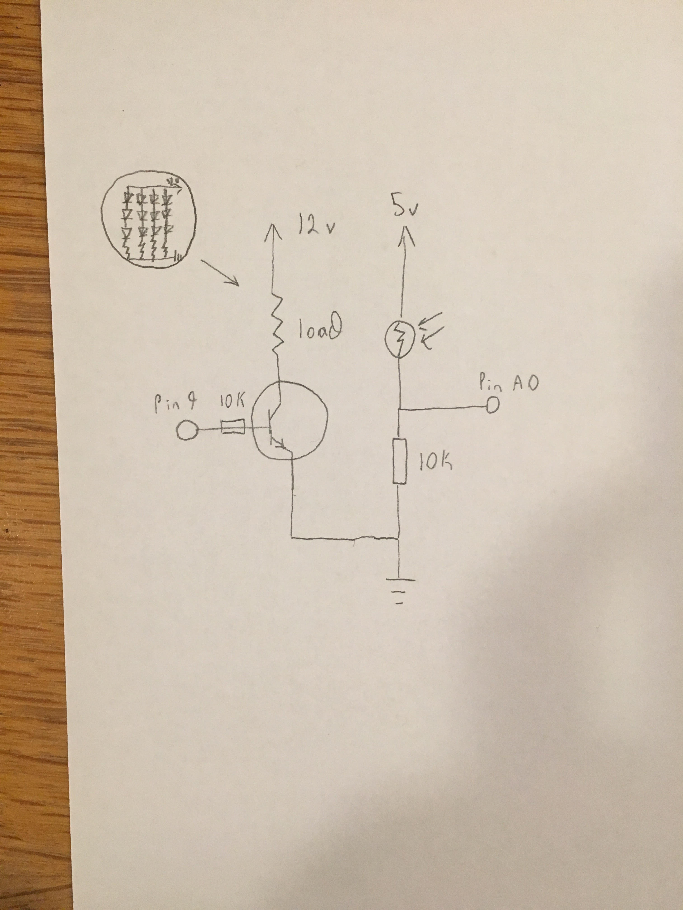

Espen Scheuers's Assignment 5!
Here is a video of assignment 5.

Here are photos of assignment 5.

The LED strip is shown in the schematic labeled as load then shown in a cut out. The transistor can provide .6A, but this cicuit only uses about .1A.
LED strip uses 18 watts for 300 LEDs which is .6 watts per LED so for 20 LEDs that is 1.2 watts.
P=VI so 1.2 watts = 12V (from wall power) * current. 1.2/12=.1 A. For the light diode resistor With a desired current of 20mA
and a voltage of 5V (5V/.02A = 250 Ohms) 10k Ohms will work.
For the other resistor I used 10k because that is what Nadya said would work in class.

Here is code and sample output for Assignment 4:

int xPosition = 500; //sets x position
int yPosition = 0; // sets y position
int button = 0;// sets int for button state
int servoPosition = 90; // sets starting motor position
#include // includes servo motor code
Servo myServo; // creates servo object
void setup() {
pinMode(9,OUTPUT); // sets pin 9 for output
myServo.attach(9); // attaches servo digital pin
Serial.begin(9600); // starts serial thing
}
void loop() {
xPosition = analogRead(A0); // finds x position of joystick
yPosition = analogRead(A1); // finds y position of joystick
button = analogRead(A2); // finds button state
Serial.print("X: "); // prints x
Serial.println(xPosition);
Serial.print("Y: "); // prints y
Serial.println(yPosition);
Serial.print("Button: "); // prints button state
Serial.println(button);
xPosition = xPosition - 530 // zeros out x position relative to central position;
Serial.print("adjusted X: ");// prints adjusted x values
Serial.println(xPosition);
Serial.println(servoPosition); // prints servo position
if(xPosition > 50) { // checks if the joystick is up
servoPosition = constrain(servoPosition + 2, 0, 180); // adjusts position up
} else if(xPosition < -50) { // checks if the joystick is down
servoPosition = constrain(servoPosition -2,0, 180); // adjusts position down
}
myServo.write(servoPosition); // moves position
}